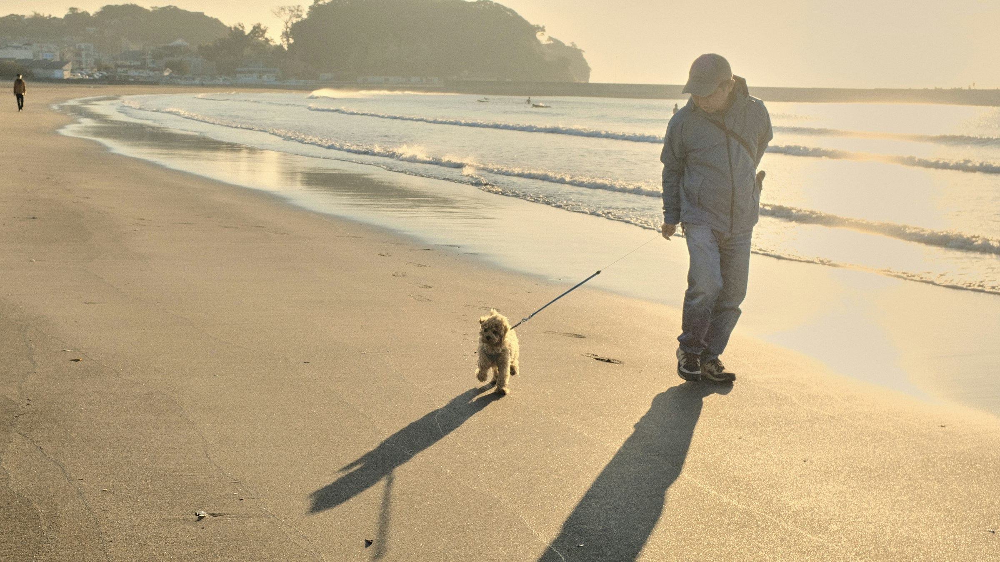
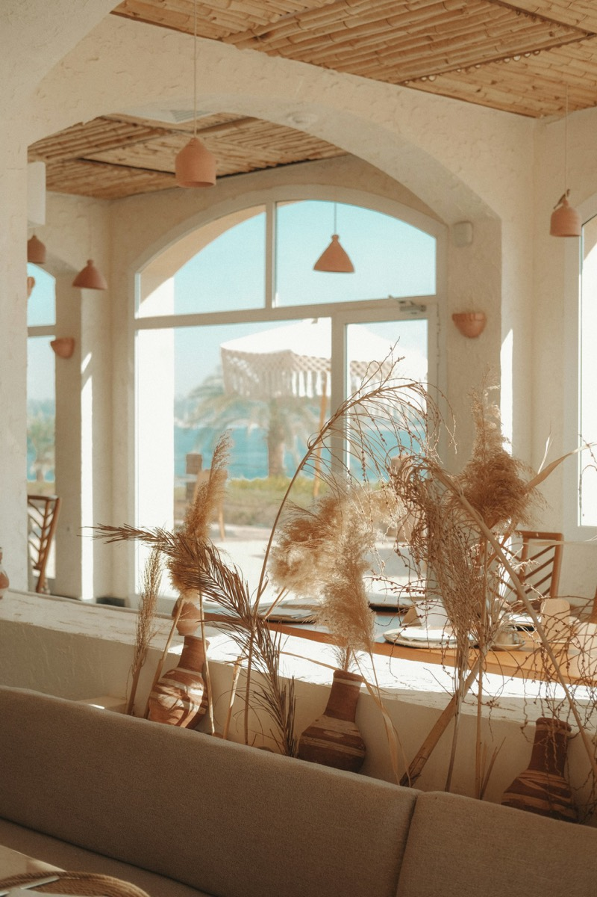
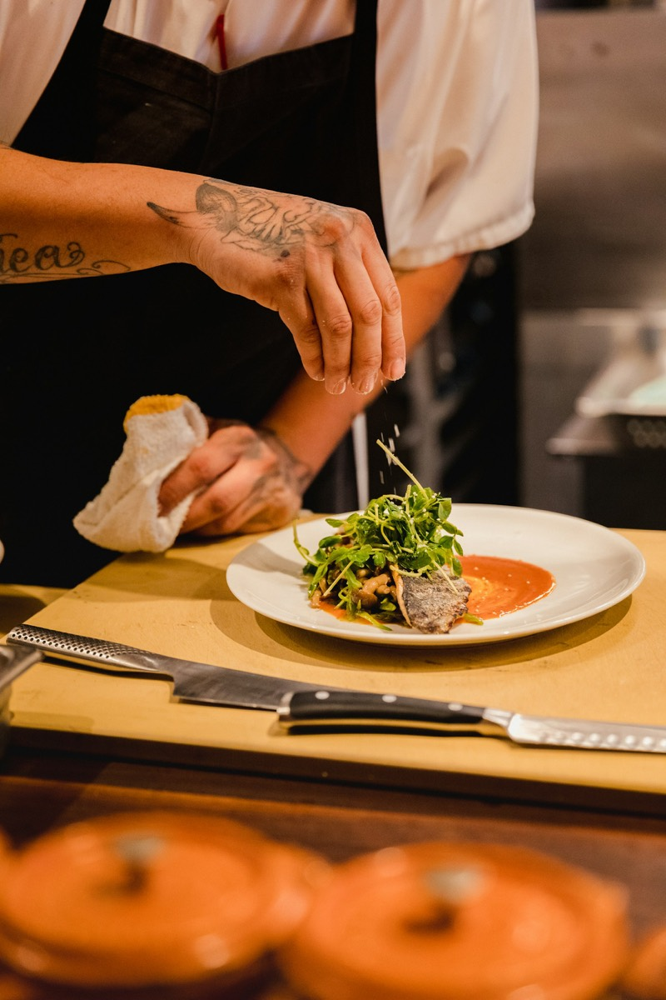
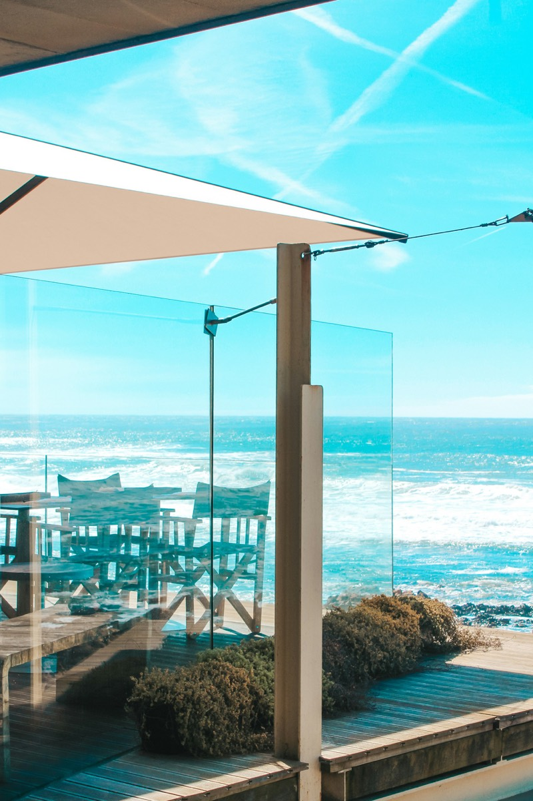
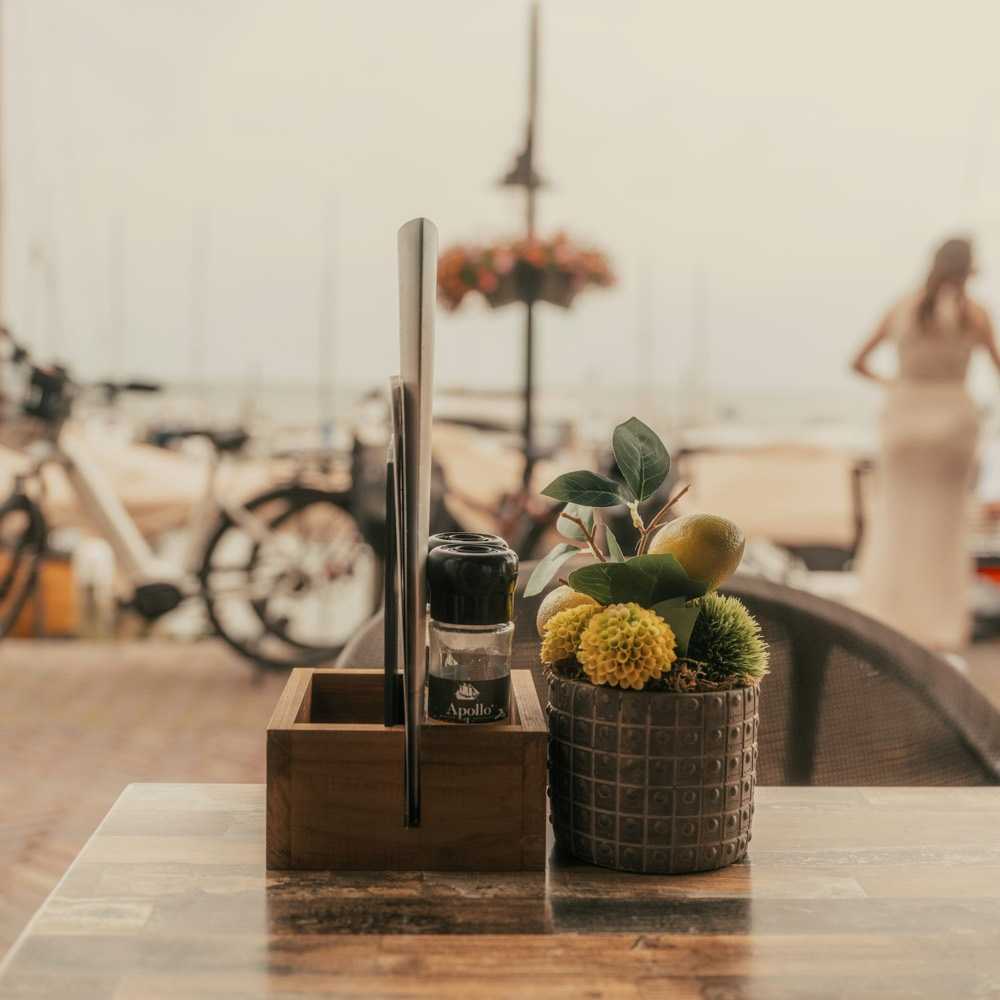
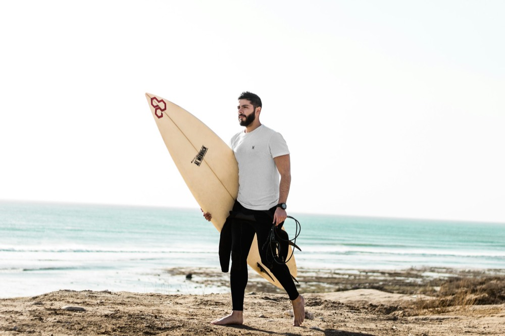
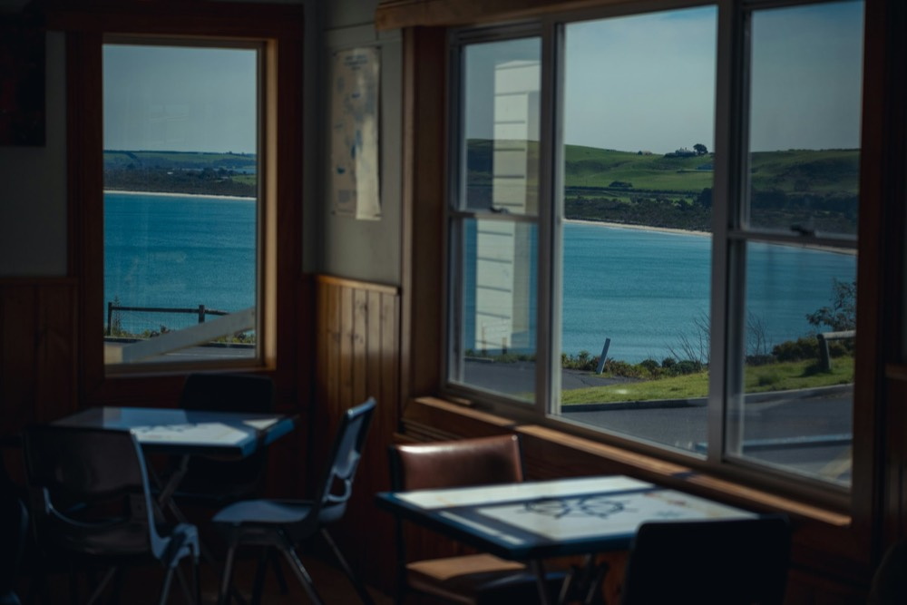
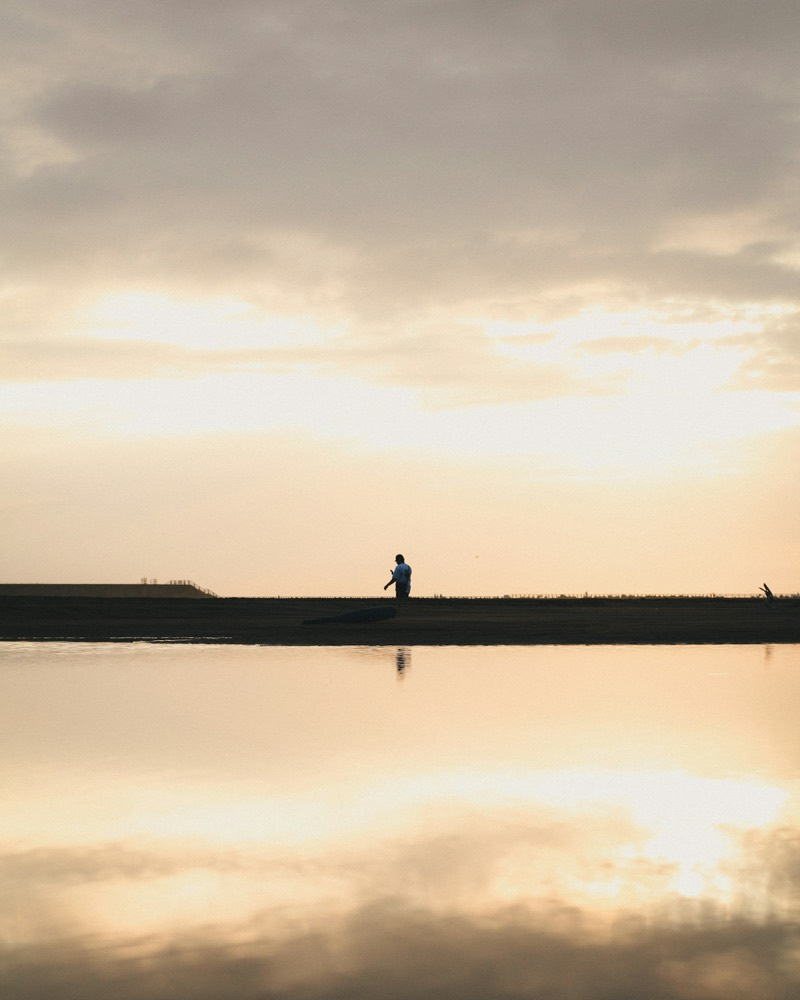
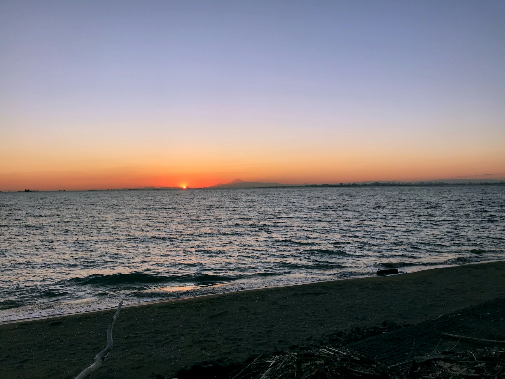

Cafe & Restaurant by the sea
海の帰りに、
いつものごはん。
国道134号線沿い、窓の大きなカフェ＆レストラン。
朝のコーヒーから夕暮れのディナーまで、ふらっとどうぞ。
※ 架空店舗の自主制作作品です
Concept
「おかえり」が言える、
海辺の食堂でありたい。
朝はサーファーがコーヒーを飲みに立ち寄り、昼は旅の途中の人がテラスでランチを。夕方には近所の家族が、夕日を眺めながらごはんを食べにきます。
SHIOSAI 134 は、観光の人も地元の人も、同じテーブルでくつろげる場所。潮の音を聞きながら、地元の野菜と相模湾の魚で、毎日食べたくなるごはんをつくっています。


Owner
波と、ごはんと、
このまちが好きで。
湘南で育って、毎朝海に入って、気づけば料理人になっていました。海から上がったときに「腹へった！」って駆け込める店が近所にほしくて、自分でつくっちゃいました。
はじめての方も、どうぞ気軽に声をかけてください。おすすめの波情報も、たぶん教えます。
— Owner & Chef
Space
海が見える、いつもの席。





- テラス席はわんちゃんOKお水のボウルもご用意しています
- お子さま連れ歓迎キッズチェアとキッズプレートあり
- ボードラックあり海帰りのサーファーもそのままどうぞ
Information
店舗情報
※ 架空店舗のため、実在の住所・連絡先はありません。
- 店名
- SHIOSAI 134（しおさい いちさんよん）
- 営業時間
- 8:00 – 21:00（L.O. 20:30）
- 定休日
- 水曜日（祝日の場合は営業）
- 席数
- 店内 24席／テラス 16席
- 場所
- 湘南・国道134号線沿い（イメージ）
海沿いの歩道から木の階段を上がった2階 - 駐車場
- 6台（満車時は近隣のコインパーキングをご利用ください）
- その他
- テラス席ペット可／テイクアウト可／全席禁煙

See you at the beach.
海の帰りに、
いつものごはんを。